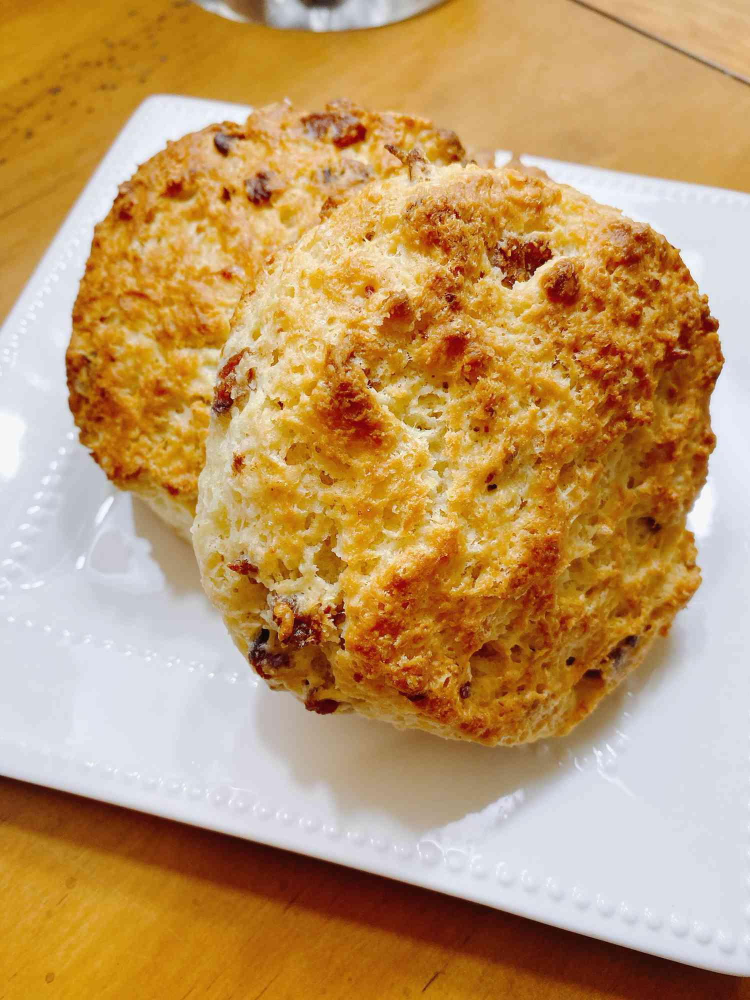

Maple Bacon Biscuits

Description
Prep Time:
20 mins
Cook Time:
10 mins
Total Time:
30 mins
Servings:
12
Yield:
12 biscuits
Ingredients
- 3 cups all-purpose flour
- 3 tablespoons white sugar
- 4 teaspoons baking powder
- ½ teaspoon cream of tartar
- ½ teaspoon salt
- ¾ cup cold butter (Optional)
- 1 cup milk
- 2 tablespoons pure maple syrup (Optional)
- 1 egg
- ½ cup finely chopped cooked bacon
- 2 tablespoons melted butter, or to taste (Optional)
- 2 tablespoons pure maple syrup, or to taste (Optional)
Steps
- Preheat the oven to 450 degrees F (230 degrees C). Line a baking sheet with parchment paper or use a nonstick baking sheet.
- Combine flour, sugar, baking powder, cream of tartar, and salt in a large bowl. Use a pastry cutter to cut cold butter into flour mixture, until you see small, pea-sized pieces of butter throughout the dough. Add milk, 2 tablespoons maple syrup, and egg and mix just until the ingredients are combined; do not overmix. Dough will be sticky with visible pieces of butter.
- Turn dough out onto generously floured surface and sprinkle bacon pieces on top. Gently knead dough 10 to 15 times to incorporate bacon, sprinkling with additional flour if the dough is super sticky.
- Pat the dough out to a 3/4- to 1-inch thickness and cut with a biscuit cutter or glass. Transfer biscuits to the prepared baking sheet.
- Bake in the preheated oven until golden brown on top, 10 to 15 minutes. Brush the tops with melted butter and remaining maple syrup for extra depth.
Click here to go back to homepage.